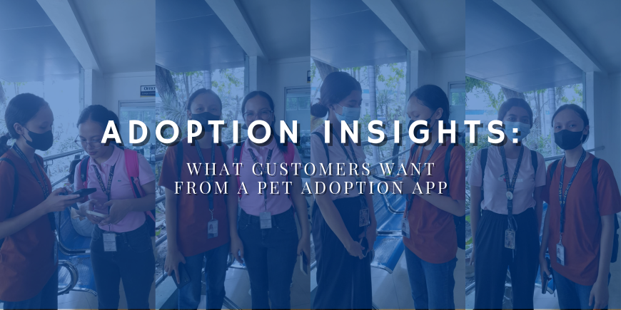

Insights from Alexandra Jagonos and Trisha Mancawan on Our 'Adoptable' App Vision
While developing our platform for pet adoption, I had the opportunity to hear from Alexandra Jagonos and Trisha Abigail Mancawan, both of whom shared valuable insights. Trisha, a Bachelor of Science in Computer Engineering student at the University of Science and Technology, offered thoughtful feedback on how technology could streamline and simplify the pet adoption process.
Trisha Mancawan and Alexandra Jagonos prioritize factors such as compatibility with their routines, pet size, age, temperament, and breed when selecting a pet for adoption. They prefer younger pets for their adaptability and training potential, aiming for a smooth fit into their living environment.
They emphasize the need for comprehensive information during adoption, including health history, personality traits, special needs, and quality photographs. This helps them make informed decisions about whether they can meet the pet’s needs.
Preparation is essential to them before bringing a pet home. They ensure they have the time, commitment, and necessary supplies. Researching specific care requirements is part of their preparation to handle the responsibilities of pet ownership.
Challenges and Frustrations in the Adoption Process
Trisha and Alexandra find the adoption process frustrating due to its complexity, feeling overwhelmed by extensive application requirements. They advocate for a more user-friendly, streamlined system to make adoption smoother and more accessible.
Their frustrations also stem from delays in application processing, hidden fees, and poor communication from shelters. These issues create stress, and they strongly believe in improving transparency around costs and providing better communication to avoid confusion.
“A transparent adoption process is key to building trust and encouraging more adoptions.”
Health and behavioral concerns are also major considerations when adopting a pet. They worry about how well a pet will adapt to new environments and whether the pet has undisclosed health or behavior issues. To address this, they suggest thorough health and behavioral assessments.
Desired Features in a Pet Adoption App
Trisha and Alexandra expect a pet adoption app to provide a user-friendly interface with clear, detailed information about available pets. Pet profiles should include behavioral traits and preferences to aid quick, informed decision-making.
They believe technology can enhance the adoption process, with features like real-time updates, faster processing times, and interactive content that improves the experience. They recommend step-by-step guidance and real-time tracking of the application process to reduce delays and confusion.
After adoption, ongoing support and resources are important. They value access to expert advice, training guides, and community forums, which help new pet owners. They also believe that features like meet-up events and discounts would encourage users to recommend the app.